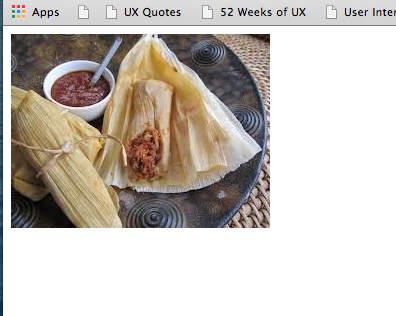
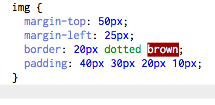
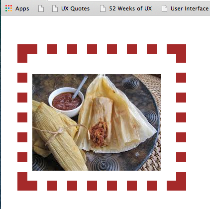

Margins, Borders, and Padding
Let's talk tamales
29.11.2014
All 3 of these can be added to the top, bottom, left, and right of elements. Below is an explanation of their differences and a few examples using the anology of the MBP (Margin, Border, Padding) tamal.
Margins
Margins are outermost layer of this delicious tamal. It is the corn husk that wraps everything up and keeps it in place. The margins are just blank space that extends past the borders.
Borders
Borders can be thought of as the doughey part of the tamal. The border lies nested inside the margins, and can vary in thickness. You can make a fat ass tamale that's lots of dough or not much else. Or you can make a slim tamale that barely has enough dough surrouding the filling to hold it together. Similarly, you can add a thin or thick border to your element, as well as change the color and style of the lines that form the border.
Padding
Finally, we have the filling, aka, the Padding. The padding lies directly on around your element. This is the inner-most layer of the MBP tamal.
Example
Below is a simple picture of a tamal, (for those of you who have no idea what I'm talking about). Notice the picture is sitting flush to the top and the left of the browser. It has no CSS sytling, yet.

Now, we can use CSS to add our MBP tamal and some space and borders. In the sample below, you can see that there are essentially 3 different way to add MBP. (Note: I've added all 3, but you can also just use one of the properties).

